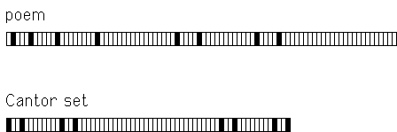

| We begin by reviewing the familiar
symmetries of nature: symmetry under translation, reflection, and rotation. |
|
| The geometric characterization of the simplest fractals is
self-similarity: the shape is made of smaller
copies of itself. The copies are similar to the whole: same shape but different size. |
 |
| More examples of
self-similarity examples, and variations including nonlinear self-similarity,
self-affinity, and statistical self-similarity. Also, some fractal forgeries of nature. |
 |
| Initiators and Generators is
the simplest method for producing fractals. It is also the oldest, dating back 5000
years to south India. |
 |
| Remarkably, fractal patterns have been found in some
poetry
and built into some. |
 |
| Without much effort, we can find
fractals in the kitchen. |
|
| Finally for today, do fractals have practical applications? How about an
invisibility cloak? |
|